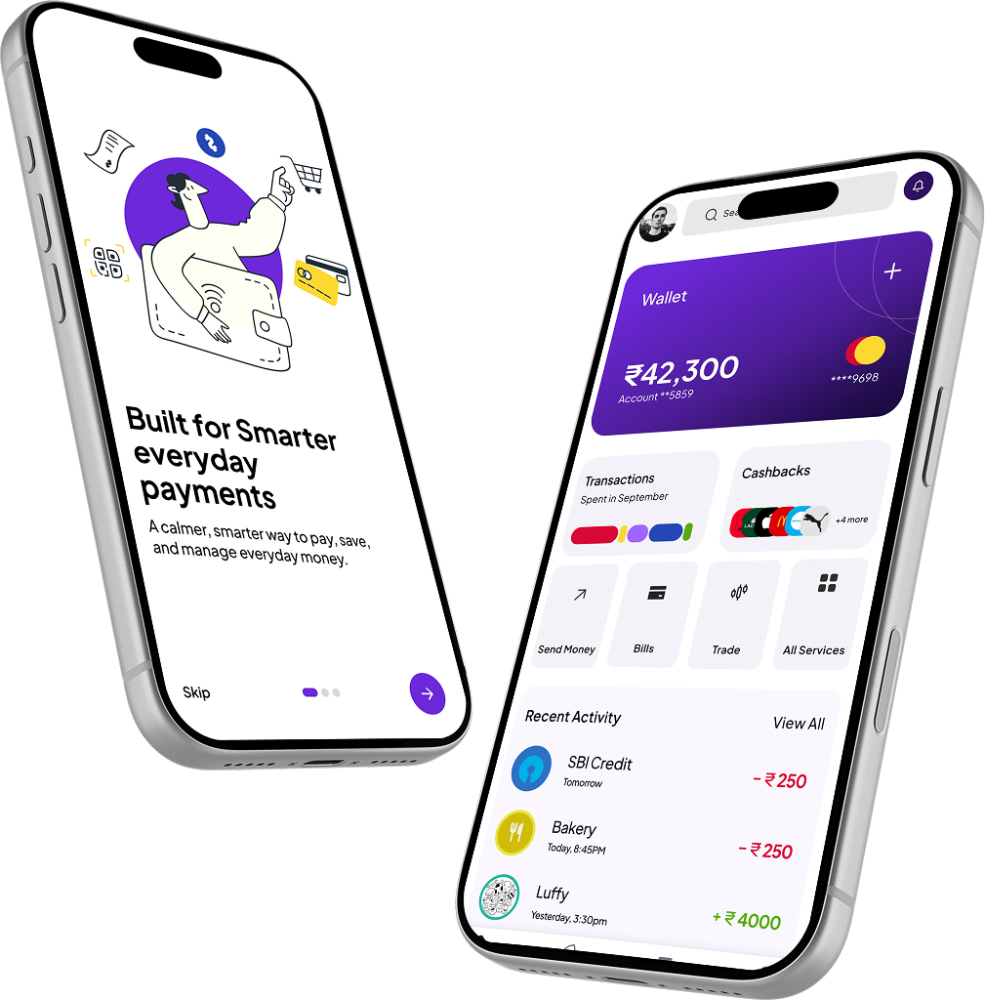
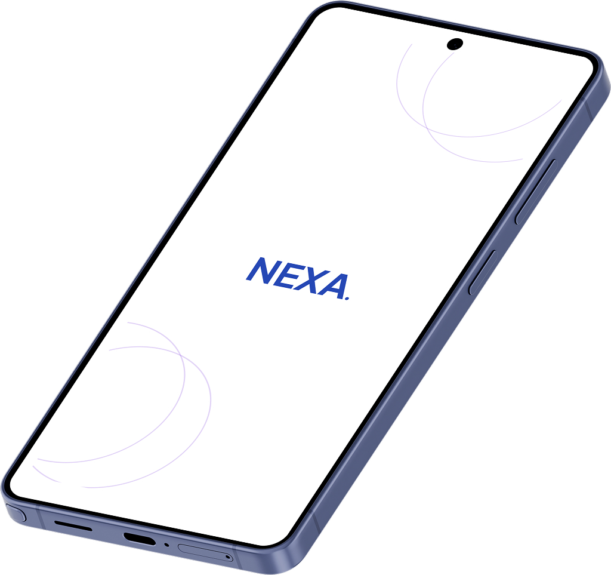
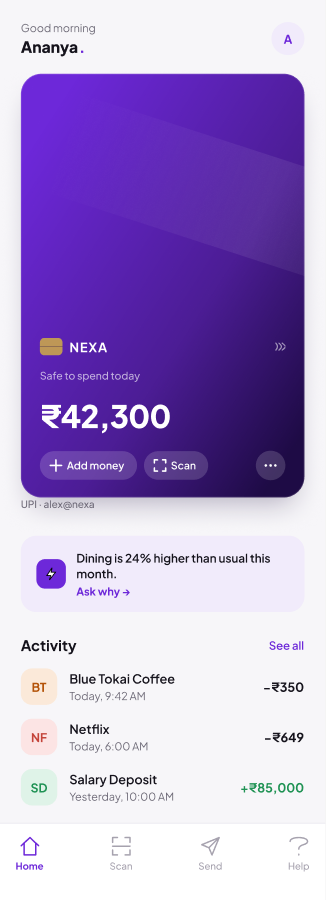
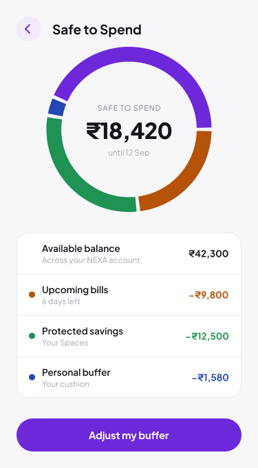
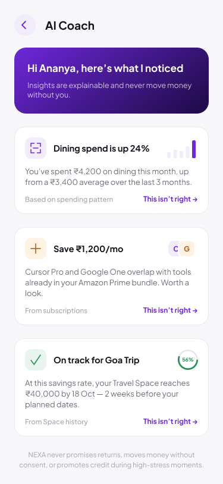

Know what changed
See the paying account, updated balance, category and effect on commitments in one place.
Nexa · Indian fintech · 0→1 concept
A UPI-first money experience designed around how India pays: QR codes, multiple bank accounts and frequent everyday transactions.

The concept brings the clarity of a modern money app into an experience built for Indian payment behaviour—without adding friction to the scan-and-pay habit people already know.
Payment confirmation tells people what happened—not what it means for the rest of their money.
The gap after “Payment successful”
A person can scan a QR code and pay in seconds, yet still open several apps to work out where the money came from, what remains and whether upcoming expenses are covered.
UPI is woven into everyday Indian life: tea stalls, rent, subscriptions, family transfers and online purchases can all pass through the same payment rail. But these transactions often sit across multiple bank accounts and apps as isolated entries.
Nexa reframes the opportunity from “make payment faster” to “make payment understandable.” The familiar QR flow stays quick; the product adds a clear financial picture before and after money moves.
How might we help people understand the effect of every UPI payment without slowing down the way India already pays?Design challenge
See the paying account, updated balance, category and effect on commitments in one place.
Present the consequence in plain language before suggesting the next action.
Mapping the Indian payment context before deciding what Nexa should become.
Ecosystem-led discovery
As a self-initiated concept, the study uses an ecosystem review and behavioural hypotheses—not fabricated user findings.
The missing layer is not another way to pay. It is a shared language that turns fragmented transactions into a readable view of available money, protected money and upcoming obligations.
| Indian payment behaviour | Experience gap | Nexa response |
|---|---|---|
| QR payments are frequent and fast | Confirmation ends at success or failure | Add a concise “what changed” summary |
| One UPI app can access several accounts | Balances and commitments remain fragmented | Show the chosen account in context |
| Transfers range from ₹20 to rent | A flat transaction list hides meaning | Group spending by purpose and consequence |
| Cash flow includes bills, goals and family needs | Current balance can feel safer than it is | Separate available, committed and protected money |
A proto-persona used to keep the concept grounded until primary research is completed.
Ananya Rao · Behavioural hypothesis
Comfortable with digital payments. Less confident about the complete picture of her money.
27 · Salaried professional · Bengaluru
Scans QR codes daily, switches between two linked bank accounts and regularly sends money to family.
When I pay through UPI, help me understand what changed so I can decide what is safe to do next.
Preserving the familiar payment flow while adding clarity at the moments that matter.
Scan → understand → stay in control
Nexa does not ask people to learn a new payment behaviour. It improves the information surrounding the QR journey.
Merchant, amount and payment context are clear before proceeding.
CertainLinked accounts show usable context, not just masked numbers.
InformedThe expected PIN and confirmation pattern remains intact.
EffortlessThe receipt connects the payment to balance, category and commitments.
OrientedThe user can recategorise, move money or inspect the calculation.
In controlTranslating fragmented payment information into a usable money model.
Model → prioritise → prototype
The key design task was deciding what a person needs to understand at a glance—and what should stay one tap deeper.
Available money, committed money and protected money create a simple mental model across accounts.
“What can I spend?”, “What changed?” and “What needs attention?” shape the home and receipt.
The concept links QR payment, post-payment explanation, transaction detail and correction.
The first home screen presented too many banking features at once.
Centred the hierarchy on total balance, Safe to Spend and immediate attention items.
“Safe to Spend” appeared as a number without enough trust.
Exposed bills, savings and buffer inputs with a direct correction path.
Payment confirmation still felt like a generic receipt.
Added paying account, updated state, category and a relevant next action.
A connected UPI and money-management experience designed for Indian needs.
Four parts, one financial picture
Nexa connects the speed of QR payments with the context people need to understand everyday money.
Scan, verify the merchant, choose a linked account and pay through a familiar flow.
Brings balances, commitments, recent activity and attention items into one clear hierarchy.
Explains what remains after bills, protected savings and a personal buffer.
Turns transaction patterns into specific, inspectable observations rather than generic advice.




Testing whether added clarity helps without weakening the speed and trust of UPI.
What the prototype must prove
Success is not more time in the app. It is faster understanding, confident decisions and fewer moments of financial uncertainty.
Task completion, time to comprehension, correction success and perceived trust are proposed measures for future prototype testing. Nexa has not been shipped, so no business impact is presented as real.
The product decision that defines Nexa—and what must be learned next.
Clarity is the product
Nexa is not another payment method. Its value is helping people read their money as clearly as they can make a payment.
Designing for India means treating QR payments, multiple linked accounts, frequent low-value transactions, recurring obligations and family transfers as the core context—not edge cases. The next step is primary research with a range of UPI users, followed by prototype testing of the QR flow, post-payment explanation and Safe to Spend calculation.